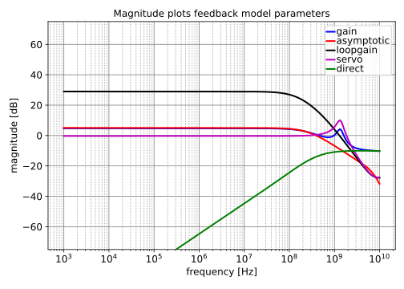
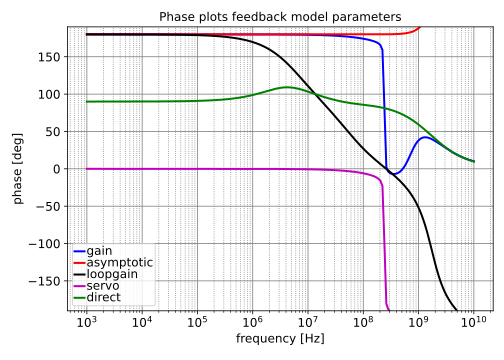
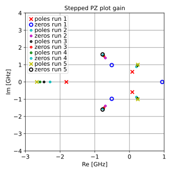
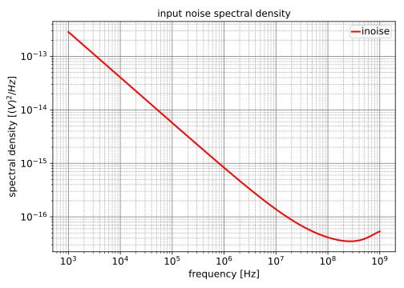
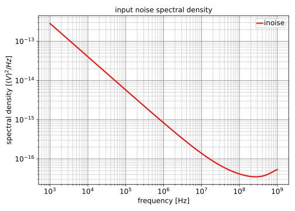

"Circuit Performance (NP)"
Circuit Performance (NP)
Circuit

Graphs
Magnitude Plot


\begin{equation}
gain=\frac{2.353 \cdot 10^{-52} s^{6} + 5.101 \cdot 10^{-41} s^{5} + 2.756 \cdot 10^{-30} s^{4} + 6.607 \cdot 10^{-21} s^{3} - 6.902 \cdot 10^{-12} s^{2} - 1.724 s}{2.411 \cdot 10^{-63} s^{7} + 1.325 \cdot 10^{-51} s^{6} + 1.99 \cdot 10^{-40} s^{5} + 9.232 \cdot 10^{-30} s^{4} + 5.041 \cdot 10^{-20} s^{3} + 6.581 \cdot 10^{-10} s^{2} + s}
\end{equation}
\begin{equation}
asymptotic=\frac{2.124 \cdot 10^{-33} s^{4} + 2.859 \cdot 10^{-22} s^{3} - 1.042 \cdot 10^{-11} s^{2} - 1.786 s}{4.6 \cdot 10^{-53} s^{6} + 5.749 \cdot 10^{-42} s^{5} - 4.649 \cdot 10^{-32} s^{4} + 3.425 \cdot 10^{-21} s^{3} + 6.059 \cdot 10^{-10} s^{2} + s}
\end{equation}
\begin{equation}
loopgain=\frac{- 1.888 \cdot 10^{28} s^{5} - 2.36 \cdot 10^{39} s^{4} + 1.908 \cdot 10^{49} s^{3} - 1.406 \cdot 10^{60} s^{2} - 2.487 \cdot 10^{71} s - 4.104 \cdot 10^{80}}{1.025 \cdot 10^{18} s^{6} + 5.442 \cdot 10^{29} s^{5} + 8.223 \cdot 10^{40} s^{4} + 3.943 \cdot 10^{51} s^{3} + 2.002 \cdot 10^{61} s^{2} + 3.107 \cdot 10^{70} s + 1.462 \cdot 10^{79}}
\end{equation}
\begin{equation}
servo=\frac{1.888 \cdot 10^{28} s^{5} + 2.36 \cdot 10^{39} s^{4} - 1.908 \cdot 10^{49} s^{3} + 1.406 \cdot 10^{60} s^{2} + 2.487 \cdot 10^{71} s + 4.104 \cdot 10^{80}}{1.025 \cdot 10^{18} s^{6} + 5.631 \cdot 10^{29} s^{5} + 8.459 \cdot 10^{40} s^{4} + 3.924 \cdot 10^{51} s^{3} + 2.143 \cdot 10^{61} s^{2} + 2.797 \cdot 10^{71} s + 4.25 \cdot 10^{80}}
\end{equation}
\begin{equation}
direct=\frac{6.839 \cdot 10^{-51} s^{6} + 1.483 \cdot 10^{-39} s^{5} + 8.004 \cdot 10^{-29} s^{4} + 1.84 \cdot 10^{-19} s^{3} + 9.194 \cdot 10^{-11} s^{2}}{7.009 \cdot 10^{-62} s^{7} + 3.722 \cdot 10^{-50} s^{6} + 5.623 \cdot 10^{-39} s^{5} + 2.697 \cdot 10^{-28} s^{4} + 1.369 \cdot 10^{-18} s^{3} + 2.125 \cdot 10^{-9} s^{2} + s}
\end{equation}
PZ analysis results
Gain type: loopgain
DC value = $-28.07$
| pole | Re [Hz] | Im [Hz] | Mag [Hz] | Q |
|---|
| p1 | $-145.3\cdot 10^{6}$ | | $145.3\cdot 10^{6}$ | |
| p2 | $-230.7\cdot 10^{6}$ | | $230.7\cdot 10^{6}$ | |
| p3 | $-502.3\cdot 10^{6}$ | | $502.3\cdot 10^{6}$ | |
| p4 | $-14.00\cdot 10^{9}$ | | $14.00\cdot 10^{9}$ | |
| p5 | $-19.70\cdot 10^{9}$ | | $19.70\cdot 10^{9}$ | |
| p6 | $-49.93\cdot 10^{9}$ | | $49.93\cdot 10^{9}$ | |
| zero | Re [Hz] | Im [Hz] | Mag [Hz] | Q |
|---|
| z1 | $4.213\cdot 10^{9}$ | $6.179\cdot 10^{9}$ | $7.479\cdot 10^{9}$ | $0.8876$ |
| z2 | $4.213\cdot 10^{9}$ | $-6.179\cdot 10^{9}$ | $7.479\cdot 10^{9}$ | $0.8876$ |
| z3 | $-265.3\cdot 10^{6}$ | | $265.3\cdot 10^{6}$ | |
| z4 | $-7.163\cdot 10^{9}$ | | $7.163\cdot 10^{9}$ | |
| z5 | $-20.89\cdot 10^{9}$ | | $20.89\cdot 10^{9}$ | |
PZ analysis results
Gain type: servo
DC value = $0.9656$
| pole | Re [Hz] | Im [Hz] | Mag [Hz] | Q |
|---|
| p1 | $-207.0\cdot 10^{6}$ | $1.335\cdot 10^{9}$ | $1.351\cdot 10^{9}$ | $3.263$ |
| p2 | $-207.0\cdot 10^{6}$ | $-1.335\cdot 10^{9}$ | $1.351\cdot 10^{9}$ | $3.263$ |
| p3 | $-265.8\cdot 10^{6}$ | | $265.8\cdot 10^{6}$ | |
| p4 | $-12.89\cdot 10^{9}$ | | $12.89\cdot 10^{9}$ | |
| p5 | $-20.00\cdot 10^{9}$ | | $20.00\cdot 10^{9}$ | |
| p6 | $-53.87\cdot 10^{9}$ | | $53.87\cdot 10^{9}$ | |
| zero | Re [Hz] | Im [Hz] | Mag [Hz] | Q |
|---|
| z1 | $4.213\cdot 10^{9}$ | $6.179\cdot 10^{9}$ | $7.479\cdot 10^{9}$ | $0.8876$ |
| z2 | $4.213\cdot 10^{9}$ | $-6.179\cdot 10^{9}$ | $7.479\cdot 10^{9}$ | $0.8876$ |
| z3 | $-265.3\cdot 10^{6}$ | | $265.3\cdot 10^{6}$ | |
| z4 | $-7.163\cdot 10^{9}$ | | $7.163\cdot 10^{9}$ | |
| z5 | $-20.89\cdot 10^{9}$ | | $20.89\cdot 10^{9}$ | |
PZ analysis results
Gain type: gain
DC value = $undefined$
| pole | Re [Hz] | Im [Hz] | Mag [Hz] | Q |
|---|
| p1 | $-207.0\cdot 10^{6}$ | $1.335\cdot 10^{9}$ | $1.351\cdot 10^{9}$ | $3.263$ |
| p2 | $-207.0\cdot 10^{6}$ | $-1.335\cdot 10^{9}$ | $1.351\cdot 10^{9}$ | $3.263$ |
| p3 | $-265.8\cdot 10^{6}$ | | $265.8\cdot 10^{6}$ | |
| p4 | $-12.89\cdot 10^{9}$ | | $12.89\cdot 10^{9}$ | |
| p5 | $-20.00\cdot 10^{9}$ | | $20.00\cdot 10^{9}$ | |
| p6 | $-53.87\cdot 10^{9}$ | | $53.87\cdot 10^{9}$ | |
| zero | Re [Hz] | Im [Hz] | Mag [Hz] | Q |
|---|
| z1 | $1.212\cdot 10^{9}$ | | $1.212\cdot 10^{9}$ | |
| z2 | $-795.1\cdot 10^{6}$ | $1.243\cdot 10^{9}$ | $1.476\cdot 10^{9}$ | $0.9281$ |
| z3 | $-795.1\cdot 10^{6}$ | $-1.243\cdot 10^{9}$ | $1.476\cdot 10^{9}$ | $0.9281$ |
| z4 | $-14.31\cdot 10^{9}$ | | $14.31\cdot 10^{9}$ | |
| z5 | $-19.81\cdot 10^{9}$ | | $19.81\cdot 10^{9}$ | |

Noise Spectrum
 
\begin{equation}
S_{IRnoise}=\frac{2.467 \cdot 10^{-17} f^{0.85} + 2.939 \cdot 10^{-224} f^{22} + 5.42 \cdot 10^{-203} f^{20} + 3.554 \cdot 10^{-182} f^{18} + 9.914 \cdot 10^{-162} f^{16} + 1.046 \cdot 10^{-141} f^{14} + 2.154 \cdot 10^{-122} f^{12} + 6.457 \cdot 10^{-103} f^{10} + 2.678 \cdot 10^{-83} f^{8} + 6.332 \cdot 10^{-66} f^{6} + 5.488 \cdot 10^{-47} f^{4} + 2.178 \cdot 10^{-28} f^{2} + 5.119 \cdot 10^{-35} f^{2.85} + 1.077 \cdot 10^{-53} f^{4.85} + 1.71 \cdot 10^{-72} f^{6.85} + 6.572 \cdot 10^{-90} f^{8.85} - 1.684 \cdot 10^{-109} f^{10.85} + 1.017 \cdot 10^{-127} f^{12.85} + 1.794 \cdot 10^{-147} f^{14.85} + 1.146 \cdot 10^{-167} f^{16.85} + 3.314 \cdot 10^{-188} f^{18.85} + 4.301 \cdot 10^{-209} f^{20.85} + 1.94 \cdot 10^{-230} f^{22.85} + 1.012 \cdot 10^{-10}}{f^{0.85} + 6.064 \cdot 10^{-19} f^{2.85} - 6.839 \cdot 10^{-39} f^{4.85} + 2.563 \cdot 10^{-55} f^{6.85} + 9.137 \cdot 10^{-74} f^{8.85} - 1.349 \cdot 10^{-92} f^{10.85} + 2.038 \cdot 10^{-110} f^{12.85} + 3.05 \cdot 10^{-130} f^{14.85} + 1.648 \cdot 10^{-150} f^{16.85} + 3.807 \cdot 10^{-171} f^{18.85} + 3.189 \cdot 10^{-192} f^{20.85}}
\end{equation}

\begin{equation}
S_{IRnoise}=\frac{2.467 \cdot 10^{-17} f^{0.85} + 2.939 \cdot 10^{-224} f^{22} + 5.42 \cdot 10^{-203} f^{20} + 3.554 \cdot 10^{-182} f^{18} + 9.914 \cdot 10^{-162} f^{16} + 1.046 \cdot 10^{-141} f^{14} + 2.154 \cdot 10^{-122} f^{12} + 6.457 \cdot 10^{-103} f^{10} + 2.678 \cdot 10^{-83} f^{8} + 6.332 \cdot 10^{-66} f^{6} + 5.488 \cdot 10^{-47} f^{4} + 2.178 \cdot 10^{-28} f^{2} + 5.119 \cdot 10^{-35} f^{2.85} + 1.077 \cdot 10^{-53} f^{4.85} + 1.71 \cdot 10^{-72} f^{6.85} + 6.572 \cdot 10^{-90} f^{8.85} - 1.684 \cdot 10^{-109} f^{10.85} + 1.017 \cdot 10^{-127} f^{12.85} + 1.794 \cdot 10^{-147} f^{14.85} + 1.146 \cdot 10^{-167} f^{16.85} + 3.314 \cdot 10^{-188} f^{18.85} + 4.301 \cdot 10^{-209} f^{20.85} + 1.94 \cdot 10^{-230} f^{22.85} + 1.012 \cdot 10^{-10}}{f^{0.85} + 6.064 \cdot 10^{-19} f^{2.85} - 6.839 \cdot 10^{-39} f^{4.85} + 2.563 \cdot 10^{-55} f^{6.85} + 9.137 \cdot 10^{-74} f^{8.85} - 1.349 \cdot 10^{-92} f^{10.85} + 2.038 \cdot 10^{-110} f^{12.85} + 3.05 \cdot 10^{-130} f^{14.85} + 1.648 \cdot 10^{-150} f^{16.85} + 3.807 \cdot 10^{-171} f^{18.85} + 3.189 \cdot 10^{-192} f^{20.85}}
\end{equation}